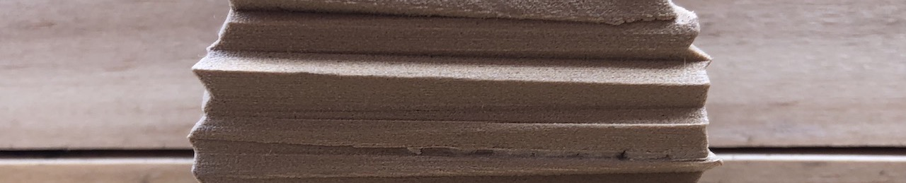
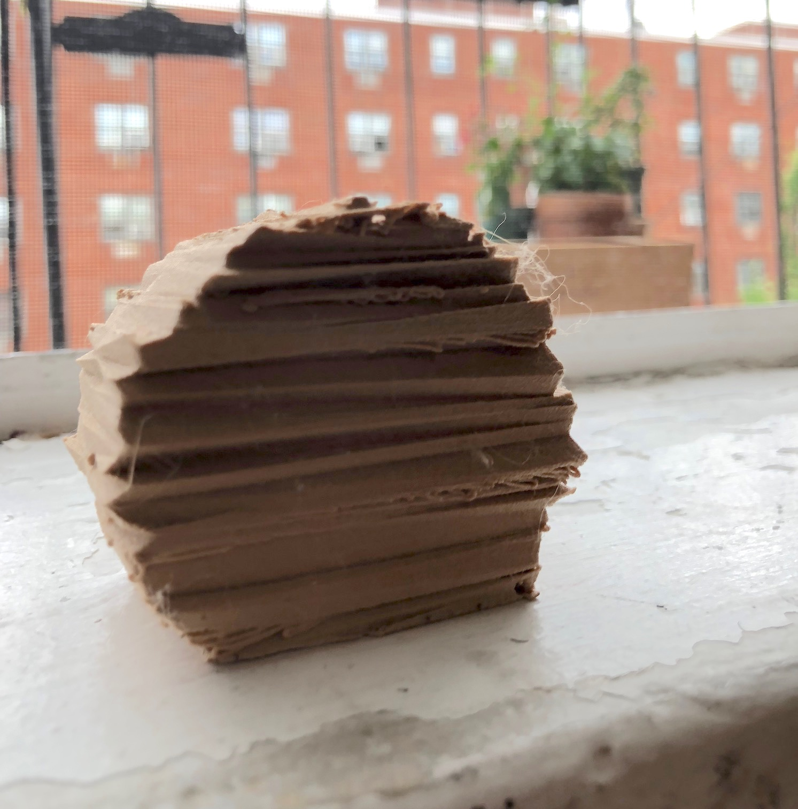
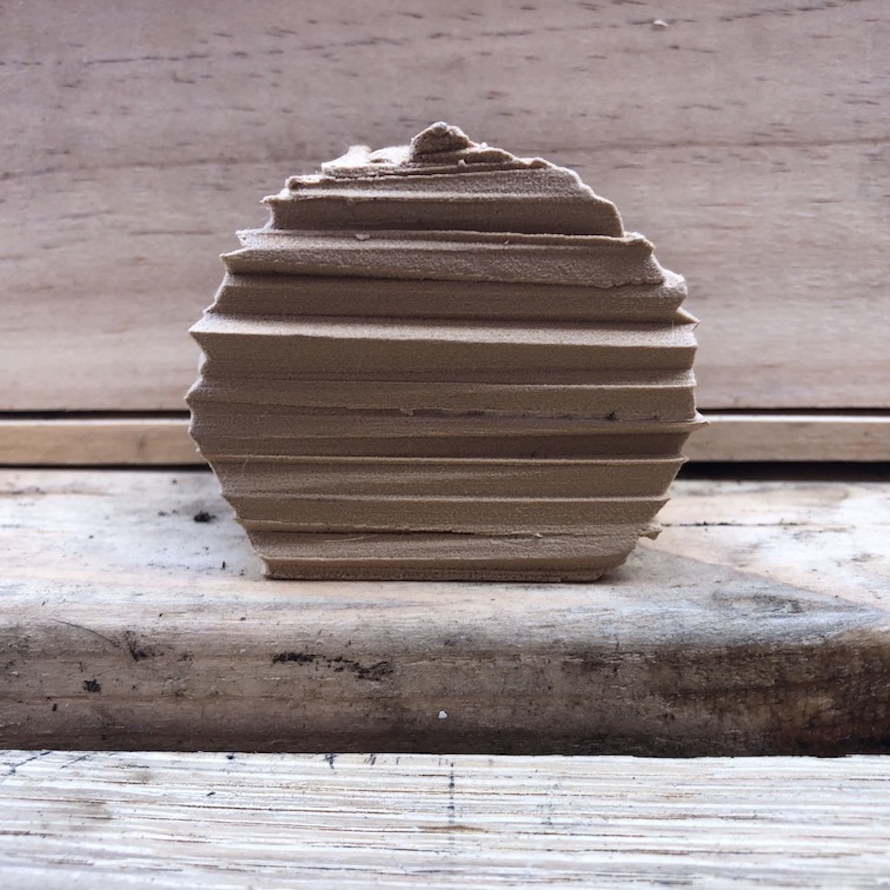
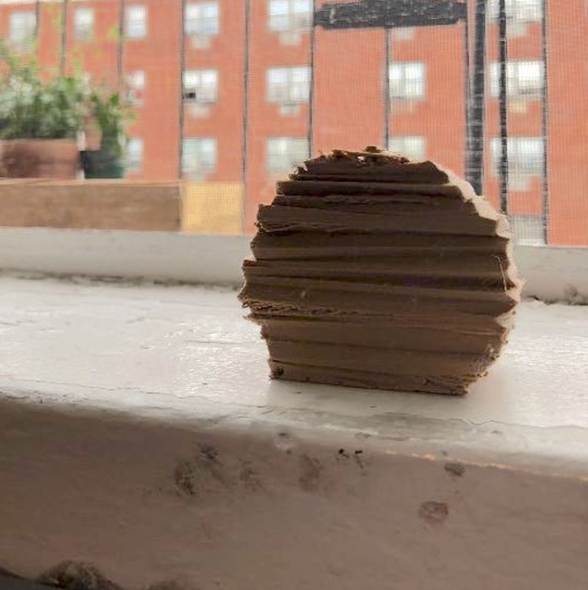

<!DOCTYPE html>
<html>
<!DOCTYPE html>
<html>
<head>
  <title>COSMIC NOISE</title>
  <link rel="stylesheet" type="text/css" href="../css/reverb.css">
  <link rel="stylesheet" type="text/css" href="../css/nav.css">  
</head>
<body>

</body>
</html>

<body>

  <!-- Header -->
  <div class="header">
    <a href="../index.html">
         
    </a>
    
    <div class="topnav">
      <a href="../index.html"><h3>WORK</h3></a>
      <a class="active" href="reverb.html"><h3>COSMIC NOISE</h3></a>
    </div>

  </div>
  <div class="container">
             
    <h3><p>Context</p> </h3>
    <p> We are surrounded by traces of electromagnetic radiation, remenence of the early stages of the universe. This "background noise" is known as the cosmic microwave background (CMB).</p>


    <h3><p>Challenge</p></h3>
    <p>Create a physical manifestation of the cosmic microwave background.</p>


    <h3><p>Experience</p></h3>
    <p>
    A piece of software generates three-dimensional dynamic forms that change appearence based on an audio of cosmic noise. Models of those altered forms are then 3D printed, each one a snapshot of the universe.
    </p>
    <div class="row">
      <div class="column">
        <div class="container">
                
        </div>
      </div>
      <div class="column">
        <div class="container">
          
        </div>
      </div>
      <div class="column">
        <div class="container"> 
          
        </div>
      </div> 
    </div>
  </div>
</body>
</html>
